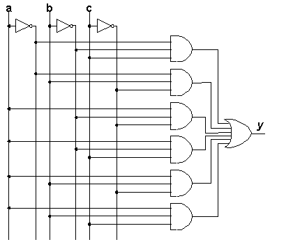
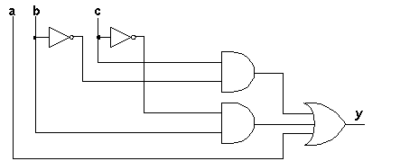

Minimizing Boolean Functions
Introduction
This document describes graphical and algebraic ways to minimize
boolean functions. It includes [ a
program ] that you can use to experiment with the algebraic
algorithm outlined below. The subject of minimization is also covered
in many textbooks, articles, and other web sites. Here are a few
references:
- Interactive
Karnaugh Map from the Technische Universität Ilmenau
(Germany).
- Karnaugh, M. "The Map Method for Synthesis of Combinational
Logic Circuits", Trans. AIEE, pt. I, vol. 72, no. 9, pp.
593-599, 1953. As cited in the Kohavi and McCluskey books
listed below.
- Kohavi, Z. Switching and Finite Automata Theory, New
York: McGraw-Hill, 1970.
- McCluskey, E. J., Introduction to the Theory of Switching
Circuits, New York: McGraw-Hill, 1965
All the datapath and control structures of a digital device can be
represented as boolean functions, which take the general form:
y = ƒ(x, … )
where "(x, … )" is a set of boolean
variables (variables that may take on only the values zero and
one). These boolean functions must be converted into logic networks in
the most economical way possible. What qualifies as the "most
economical way possible" varies, depending on whether the network is
built using discrete gates, a programmable logic device with a fixed
complement of gates available, or a fully-customized integrated
circuit. But in all cases, minimization yeilds a network with as small
a number of gates as possible, and with each gate as simple as
possible.
To appreciate the importance of minimization, consider the two networks
in Figures 1 and 2. Both behave exactly the same way! No
matter what pattern of ones and zeros you put into a, b,
and c in Fig. 1, the value it produces at y will be
exactly matched if you put the same pattern of values into the
corresponding inputs in Fig. 2. Yet the network in Fig. 2 uses far
fewer gates, and the gates it uses are simpler (have smaller fan-ins)
than the gates in the lefthand side.
| 
| 
|
| Figure 1
| Figure 2
|
Background and Terminology
- The variables in the expression on the right side of a boolean
equation are the input wires to a logic network. The left side of
a boolean equation is the output wire of the network.
- Any equation or network can be completely and exactly
characterized by a truth table. A truth table lists every possible
combination of values for the input variables, and the
corresponding output value of the function for each combination.
There are 2n rows in the truth table for a
function or network with n input variables, so it isn't
always practical to write out an entire truth table. But for
relatively small values of n, a truth table provides a
convenient way to describe the function or network's behavior
exactly.
Always list the combinations of input values in
binary counting order from top to bottom ( 000, 001, 010,
011, … ).
- Every row of a truth table with a one in the output column is
called a minterm. A convenient way to represent a
truth table is to treat each combination of input variables as a
binary number and to list the numbers of the rows that are
minterms.
For example, this document uses the function with the following
truth table as a running example:
a b c | Y
--------------
0 0 0 | 0
0 0 1 | 1
0 1 0 | 1
0 1 1 | 0
1 0 0 | 1
1 0 1 | 1
1 1 0 | 1
1 1 1 | 1
This truth table can also be represented as the list of minterms,
[ 1, 2, 4, 5, 6, 7 ].
- One standard way to represent any boolean function is called
"sum of products" (SOP) or, more formally, disjunctive normal
form. In this form, the function is written as the logical OR
(indicated by +) of a set of AND terms, one per minterm.
For example, the disjunctive normal form for our sample function
would be:
Y = a'b'c + a'bc' + ab'c' + ab'c + abc' + abc
- There is also a conjunctive normal form, which
represents an expression as a product of sums rather than as a sum
of products. The material presented below can be extended to deal
with conjunctive normal forms rather than disjunctive normal forms.
We'll leave that as as one of those classic "exercises left for the
student," and deal with just disjunctive normal forms.
- A literal is a variable that is either complemented or
not in a product term. The minterms in our sample function have a
total of six literals: a, a', b, b', c, and c'. The network in
Figure 2 uses only 5 literals because a' isn't used. In the
disjunctive normal form of a funtion, each product term has one
literal for each variable. (3 in our example function.)
- Figure 1 implements our sample function, and shows how to
translate a disjunctive normal form directly into a logic network.
The procedure is as follows:
- Use inverters to generate all possible literals (the six
vertical wires on the left in Fig. 1).
- Draw an AND gate for each minterm.
- Connect the outputs of all the AND gates to a single OR
gate.
- Connect the inputs of each AND gate to a pattern of literals
in such a way that it will generate a 1 when the pattern of input
values matches the particular minterm assigned to it.
- A minimal form of a boolean expression is one which
implements the expression with as few literals and product terms as
possible. There may be more than one minimal form of an
expression; if there is jut one minimal form, that form is the
minimum.
- There are many rules for manipulating a boolean expression
algebraically, but there is just one rule that you need in order to
minimize a function once it is in disjunctive normal form, the
rule of complementation.
The rule of complementation says that (x + x') is 1, so any two
terms that are in the form (x + x')Y can be reduced to just Y
without changing its meaning. Another way of saying this is that
two product terms can be simplified if the only difference between
them is the value of exactly one variable, in which case that
variable can be eliminated from both terms to give an equivalent
single term. For example ab'c + a'b'c is equivalent to (a + a')b'c,
which is the same as the single product term, b'c.
Karnaugh Maps
A Karnaugh Map is a graphical way of minimizing a boolean expression
based on the rule of complementation. It works well if there are 2, 3,
or 4 variables, but gets messy or impossible to use for expressions with
more variables than that.
The idea behind a Karnaugh Map (Karnaugh, 1953) is to draw an
expression's truth table as a matrix in such a way that each row and
each column of the matrix puts minterms that differ in the value of a
single variable adjacent to each other. Then, by grouping adjacent
cells of the matrix, you can identify product terms that eliminate all
compelemented literals, resulting in a minimized version of the
expression.
Figure 3 shows how the minterms in truth tables are placed in a
Karnaugh Map grid for both 3 and 4 variable expressions.
Looking at the 3 variable map on the left in Fig. 3,
note that minterm 0 (0002) is just above minterm 4
(1002). This arrangement means that if both minterms 0 and
4 occur in a function, the first variable (the one named a in
Fig. 3) appears in both its true and complemented form, and can be
eliminated. The top row of the Karnaugh Map is labeled with a'
and the lower row with a: Any minterms appearing in the top row
have the literal a' in them, and any minterms in the bottom row
have the literal a in them. At the same time, note that each
column has the same values for the variables b and c.
Also, the columns are arranged in an order so that only one variable
changes value as you go from one column to the next. Thus, the first
two columns differ in the value of c, the second and third
columns differ in the value of b, and the third and fourth
columns differ in the value of c again. Furthermore, the first
and fourth columns are "next to" each other as well, because they
differ from each other just in the value of b.
The right side of Figure 3 shows that this same pattern (adjacent
columns differ by the value of a single variable) applies to the
rows of a Karnaugh map too: The first and second rows of that
map differ in the value of b, the second and third differ in the
value of a, the third and fourth differ in the value of
b, and the first and fourth differ in the value of a.
Figure 4 show our sample function drawn as a Karnaugh Map.
Minterm 1 and 2 are in the second and fourth columns of the top row,
while minters 4, 5, 7, and 6 appear from left to right in the four
columns of the bottom row.
A Karnaugh Map is used to produce a minimal sum of products
implementation of an expression by drawing rectangles around groups of
ajacent minterms in the map; each rectangle will correspond to one
product term, and the full expression will be constructed as the OR
(sum) of all the product terms. The goal is to have as few product
terms as possible, which implies that each product term will account for
as many minterms as possible.
Here are the rules for drawing the rectangles:
- Every minterm must be inside at least one rectangle, but there
must not be any zeros inside any rectangles.
- Every rectangle has to be as large as possible.
- Rectangles may wrap around to include cells in both the
leftmost and rightmost columns. Likewise for the top and bottom
rows.
- The number of minterms enclosed in a rectangle must be a power
of two (1, 2, 4, 8, or 16 minterms for 4-variable maps).
- Some functions have "don't care" conditions, which are
combinations of inputs that will never occur, resulting in cases
where it doesn't matter whether the output is a zero or a one.
Where these don't care conditions appear in a Karnaugh Map (usually
indicated by X's instead of ones or zeros), they may be included
inside rectangles or not depending on what will make the rectangles
as few and as large as possible.
The Interactive
Karnaugh Map mentioned at the beginning of this page is a nice way
to see how to draw the rectangles. If you click on different minterm
positions in the map, the rectangles will be redrawn to match the rules
given above.
Figure 5 shows the rectangles for our sample
function.
The largest rectangle (the bottom row) corresponds to the product term
a. By enclosing four minterms, two variables have been
eliminated resulting in a single product term with a single variable.
The rectangle in the second column encloses two minterms, eliminating
one variable (a) from that product term. Similarly, the
rectangle in the fourth column eliminates a from that product
term. The resulting sum of products function is:
y = a + b'c + bc'
If you examine Fig. 2, you will see that that logic network implements
exactly this function.
Every time you double the number of minterms inside a rectangle, you
eliminate one variable from the resulting product term. Every doubling
corresponds to applying the rule of complementation again. The next
section shows how to do the same thing algebraically.
Algebraic Minimization
Minimizing an expression algebraically involves repeatedly applying the
rule of complementation, starting with the disjunctive normal form of
the function, and ending with a set of product terms called prime
implicants. A prime implicant is a product term that will generate
ones only for combinations of inputs that are minterms of the disjunctive
normal form of the function, and which cannot be further reduced by
combining with any other term. They correspond to the rectangles in a
Karnaugh Map.
We will call each step in this process a "pass." It takes two passes
to minimize our sample function. The following chart shows the original
disjunctive normal form of the function as "Pass 0" and shows what
reductions are performed for the other two passes.
---------------------------------------------------------------
| Pass 0: a'b'c + a'bc' + ab'c' + ab'c + abc' + abc |
---------------------------------------------------------------
---------------------------------------------------------------
| Pass 1: a'b'c + ab'c => b'c |
| a'bc' + abc' => bc' |
| ab'c + ab'c' => ab' |
| abc' + abc => ab |
---------------------------------------------------------------
| b'c + bc' + ab' + ab |
---------------------------------------------------------------
---------------------------------------------------------------
| Pass 2: ab' + ab => a |
---------------------------------------------------------------
| a + b'c + bc' |
---------------------------------------------------------------
The rules to follow for each pass are:
- Each term present in one pass must be combined with another term
if possible.
- Any terms that cannot be combined are carried forward unchanged
to the next pass.
- A term that has already been used once in a pass should be used
again if it will allow another term to be reduced. For example, in
Pass 1 above, ab'c is used twice, and so is abc'.
The rule about reusing terms in a pass corresponds to circling some
minterms more than once in a Karnaugh Map. The two minterms that are
reused in Pass 1 above are exactly the same two that are circled twice
in the Karnaugh Map of Figure 5.
Once the prime implicants of an expression have been determined, a
minimal subset of them has to be selected. Picking a minimal subset of
prime implicants relies on the notion of minterms being "covered" by
prime implicants. For our sample function, the prime implicant
a covers minterms 4, 5, 6, and 7; the prime implicant b'c covers
minterms 1 and 5, and and the prime implicant bc' covers minterms 2 and
6. In this example, we need all three prime implicants in order to
cover all the minterms at least one, and the expression shown at the
end of Pass 2 is the minimized form for our sample function.
But whenever there is more than one minimal form for an expression, the
different forms will correspond to different subsets of the complete
set of prime implicants. For any one of the minimal forms there will
be extra prime implicants that have to be discarded.
The following procedure describes a way to determine one minimal form
of an expression after all the prime implicants have been determined.
- For every minterm that is covered by just one prime implicant,
that prime implicant must be included in the minimal form. These
minterms are called essential prime implicants because it is
essential to include them in the minimization.
For our sample function, minterms 2, 3, and 4 are each covered by
exactly one prime implicant, so all three of the prime implicants
are essential, there is just one minimized form, and there is nothing
more to do.
- Make a list of all minterms that are not covered by any of the
essential prime implicants.
- Make a list of unused prime implicants. Order this list by the
number of literals each prime implicant contains.
- If any remaining minterms are covered by just one of the
remaining prime implicants, the corresponding prime implicants must
be added to the minimization, and all the minterms they cover must
be removed from the list of uncovered minterms.
- If there are any uncovered minterms add the unused prime
implicant with the smallest number of literals to the minimization,
and remove all minterms that are covered by this prime implicant
from the list of uncovered minterms.
If two or more prime implicants have equally small numbers of
literals, there is more than one minimal solution. Finding them
all involves systematically substituting each of the tied prime
implicants into the differnt minimal forms being generated.
- Remove all prime implicants that fail to cover any of the
remaining minterms from the list of unused prime implicants.
- Repeat the previous three steps until all minterms have been
covered.
Disclaimer! The algorithm given here is based on the
Quine-McClusky "chart" method described in (McClusky, 1965) and in
(Kohavi, 1970). But it is not exactly the same as the procedure given
in those references, and may not produce equivalent results.
Minimization Program
The Java program available here is a "work in progress." It allows you
to enter a boolean expression and see how it minimizes that expression,
but at this point it (a) does not have a graphical user
interface, and (b) determines only one minimal form, even if
multiple forms are possible.
You can download the program by [ clicking
on this link ]. The file you download is a zip file named
Minimize.zip, which contains the classess that make up the program.
Save Minimize.zip in some directory on your computer. There is no need
to unzip it. If you do not have Java installed on your computer, you
will need to download and install the [ Java Runtime
Environment (JRE) ] from Sun Microsystems.
Once you have the JRE (or the full Java Development Kit) installed, you
can run the program from a "DOS Command Line" window, as described in
the next section.
Running the Program
Open a DOS Command Line window on your computer, and change to the
directory where you downloaded Minimize.zip. The command to run the
program is:
java -cp Minimize.zip Minimize "boolean-expression"
The output of the program will be displayed on the screen. If you want
to save the output in a file, put "> out" (without the quotes) at the
end of the command line given above. This will create a file named
out, but you may use any name you like.
The boolean expression you enter on the command line must use the
following syntax:
- Use single letters for the variable names. Upper and lowercase
letters are different variables. Don't use more than 31 different
variables. (Your computer will undoubtedly run out of memory
before you get close to this limit.)
- Use * for AND, + for inclusive OR, and ^ for exclusive OR. You
can leave out the *'s. That is, ab is the same as a*b.
- Use ' for complementation after the item to be complemented.
- AND has precedence over OR and XOR. The latter two will be
evaluated in right to left order. Use parentheses to control the
order of evaluation.
- Spaces have no effect. The entire expression is enclosed in
quotes so that it will be seen as a single string by the program.
Without the quotes, the command interpreter will break it into
different elements at the positions of the spaces. Also, without
the quotes, asterisks and other symbols will have significance to
the command interpreter, leading to error messages unrelated to the
program itself.
- The constant literals 0 and 1 may be used.
Examples
Minimize> java -cp Minimize.zip Minimize a+b^c
Finding One Minimization
Minterm Numbers: [1,2,4,5,6,7]
Reduced ab'c and a'b'c to b'c in pass 1.
Reduced abc' and a'bc' to bc' in pass 1.
Reduced ab'c and ab'c' to ab' in pass 1.
Reduced abc' and ab'c' to ac' in pass 1.
Reduced abc and ab'c to ac in pass 1.
Reduced abc and abc' to ab in pass 1.
Unable to reduce b'c in pass 2
Unable to reduce bc' in pass 2
Reduced ab and ab' to a in pass 2.
Unable to reduce b'c in pass 3
Unable to reduce bc' in pass 3
Unable to reduce a in pass 3
Minterm 1 is covered by 1 prime implicant.
Minterm 2 is covered by 1 prime implicant.
Minterm 4 is covered by 1 prime implicant.
Minterm 5 is covered by 2 prime implicants.
Minterm 6 is covered by 2 prime implicants.
Minterm 7 is covered by 1 prime implicant.
Expression: a+b^c
Sum of products: a'b'c + a'bc' + ab'c' + ab'c + abc' + abc
Prime implicants: [ a: ab'c', ab'c, abc', abc ], [ b'c: a'b'c, ab'c ], [ bc': a'bc', abc' ]
Minimized: b'c + bc' + a
Minimize>
Minimize> java -cp Minimize.zip Minimize "aa'+b1"
Finding One Minimization
Minterm Numbers: [1,3]
Reduced ab and a'b to b in pass 1.
Unable to reduce b in pass 2
Minterm 1 is covered by 1 prime implicant.
Minterm 3 is covered by 1 prime implicant.
Expression: a*a'+b*1
Sum of products: a'b + ab
Prime implicants: [ b: a'b, ab ]
Minimized: b
Minimize>